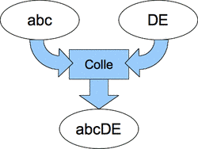
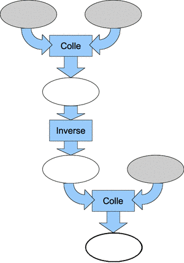
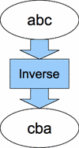
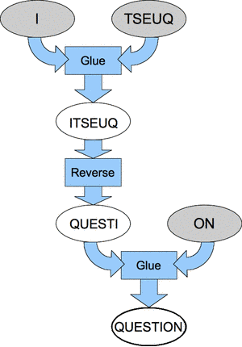

On dispose de deux types de machines pour manipuler les textes :
|  |  |
|  |
En combinant deux machines de type « Colle » et une machine de type « Inverse » on obtient une grosse machine plus compliquée (voir partie droite de l'image).
On veut que le résultat tout en bas soit le mot « QUESTION ». Quels sont les trois textes que l'on doit placer dans les ovales grisés, de gauche à droite ?
La bonne réponse est la réponse 3.

Les réponses 1 et 2 ne peuvent pas être bonnes car les terminaisons NOI et INO ne conviennent pas. La réponse 4 ne convient pas car les mots QU et EST vont être collés en QUEST qui va être inversé en TSEUQ, ce qui ne convient pas non plus.
Le sujet présente ce qu'on appelle une forme simple d'automate, les automates étant eux-mêmes des formes particulières de programmes.
L'automate présenté ici est construit à partir des éléments "Inverse" et "Colle", qui transforment et combinent des textes toujours de la même manière. Lorsque l'on fournit des mots en entrée à cet automate, il calcule un mot en sortie. Observez que quelque soit les mots d'entrée, le mot de sortie contient toujours une et une seule fois chacune des lettres des mots d'entrée.